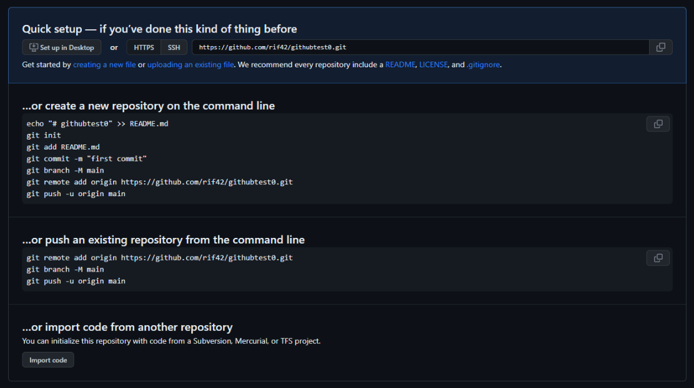

Studi Kasus 3
Project Clustering - Spotify Playlist Clustering
Project Overview
Project ini berfungsi untuk membuat sebuah aplikasi untuk melakukan proses clustering terhadap lagu-lagu yang ada di dalam sebuah playlist spotify.
Lagu-lagu tersebut dikelompokan berdasarkan karakteristik lagu (audio feature) yang kita dapatkan dari spotify web API.
Perlu diingat bahwa untuk project ini, kita akan buat algoritmanya dahulu, mengetesnya di notebook kita, lalu kita akan mengubahnya menjadi file python dan mengupload nya di Streamlit.
Spotify

Spotify adalah platform musik digital yang menyediakan layanan streaming musik dan podcast. Musik dan podcast di-stream melalui internet tanpa perlu mengunduhnya secara permanen. Pengguna dapat membuat playlist pribadi dan menyimpan lagu favorit di Library.
Python

Python adalah bahasa pemrograman serba guna yang dikembangkan pada awal 1990-an oleh Guido van Rossum. Tidak perlu mendeklarasikan tipe data variabel, dan nilai variabel dapat berubah saat program berjalan. Python mengutamakan kejelasan dan menghindari penggunaan tanda kurung kurawal atau titik koma. Python menyediakan pustaka bawaan (standard library) yang kaya, serta banyak modul dan pustaka dari pihak ketiga yang memperluas fungsionalitasnya.
Streamlit
Streamlit adalah framework open-source untuk mengembangkan aplikasi web interaktif dengan menggunakan bahasa pemrograman Python. Tujuannya adalah menyederhanakan proses pembuatan aplikasi web dengan memungkinkan pengembang untuk membuat aplikasi dengan mudah menggunakan kode Python yang sederhana dan familiar.
Clustering
Clustering adalah proses pengelompokan data atau objek-objek serupa menjadi kelompok-kelompok yang lebih homogen berdasarkan kesamaan fitur atau karakteristik tertentu.
K-Means

Algoritma k-means adalah metode clustering yang mengelompokkan data menjadi beberapa kelompok berdasarkan jaraknya ke pusat kelompok yang ditentukan secara iteratif.
Untuk penjelasan Algoritma Clustering K-Means, bisa mengunjungi video ini https://www.youtube.com/watch?v=3XwBZbqo0mQ
Application Flow
User flow adalah interaksi antara user dan aplikasi ini harus kita pelajari dan petakan secara detail agar aplikasi bisa digunakan dengan user secara nyaman.
Data flow adalah alur dari data yang ada di dalam aplikasi.
Function flow adalah struktur dari fungsi yang ada di dalam aplikasi
User Flow
User flow dari aplikasi yang akan kita buat cukup simple :
Data Flow

Function Flow

Membuat Akun Spotify Developer
Daftar Sebagai Spotify Developer
Untuk mengakses web API spotify, kita harus mendaftar sebagai spotify developer. Berikut langkahnya:
- Pergi ke https://developer.spotify.com
- Klik tombol daftar di pojok kanan atas
- Isi form, klik daftar, verifikasi email
- Login dengan akun terverifikasi
- Pergi ke dashboard
Jika anda sudah bisa masuk dashboard, berarti anda sudah terdaftar menjadi developer spotify! Ikuti langkah-langkah selanjutnya.
Pergi ke dashboard spotify dan tekan create app

Isi form dengan data

App name, nama dari aplikasi, misal spotify_playlist_clusterization
App description, deskripsi singkat dari aplikasi yang akan dibuat
Website, website personal dari pembuat aplikasi
Redirect URI, umumnya user akan ditujukan ke URI ini ketika mengalami kegagalan request. namun untuk project ini, kita dapat mengisinya dengan apapun, seperti URL akun github atau linkedin
Klik app yang sudah dibuat

Pergi ke settings, cari ClientID dan ClientSecret

Buat Repositori di Github
Github adalah aplikasi untuk mengontrol versioning dari koding kita. Github akan melacak perubahan yang kita buat di dalam file koding, sehingga kita dapat membandingkan atau kembali ke versi sebelumnya. Dalam project ini, Github juga digunakan untuk proses deployment di Streamlit.
Login ke Github

Pergi ke Github.com dan login atau daftar akun baru. Jika anda membuat akun baru, jangan lupa verifikasi akun setelah dibuat. Jika anda sudah login, maka dashboard akun anda akan tampil seperti berikut:
Buat Repository Baru

Di side tab sebelah kiri dashboard anda klik tombol new untuk membuat sebuah repository baru. Repository adalah sebuah tempat untuk menyimpan code-code anda.
Isi kolom seperti contoh, nama dan deskripsi bebas. Pastikan bahwa repository bersifat public. Lalu klik create repository
Simpan Alamat Git (git remote)

Setelah membuat repositori, halaman ini akan muncul. Copy alamat git (https://github.com/rif42/githubtest0.git) dan simpan data ini
Open Folder di Code Editor

Buka code editor anda (contoh VScode atau IntelliJ), buka terminal, lalu open folder dan pilih sebuah folder.
Buat File Baru

Buat file baru, dan namai file nya spotify_clustering.ipynb. File ini adalah sebuah notebook, mirip seperti jupyter notebook. Format notebook sangat bagus untuk eksperimen koding. Setelah file dibuat, tidak perlu diisi apapun.
Push File ke Repository
Buka terminal dengan cara menekan (ctrl + shift + `) atau membuka terminal > new terminal di top bar vscode. Lalu ketik command berikut:
git add ., command ini berfungsi untuk menyimpan semua perubahan dalam file
git commit -m "first", command ini berfungsi untuk menyimpan commit, sebuah langkah terakhir untuk menyimpan semua perubahan yang ada di dalam repository. Teks yang ada di dalam tanda petik adalah message atau deskripsi dari commit.
git remote add origin [url], URL disini adalah alamat git yang didapat di langkah 4c (https://github.com/rif42/githubtest0.git)
git push origin master, mengirim semua commit ke repository secara final
Pengambilan Dataset
Dataset dari aplikasi yang kita gunakan adalah lagu-lagu yang ada didalam playlist dari user. Untuk mengambil lagu tersebut, kita perlu membuat sebuah script untuk berkomunikasi dengan spotify web API dan mengambil data yang kita butuhkan.
Buka File Notebook
Buka code editor anda dan temukan file notebook yang telah dibuat di langkah sebelumnya. Pastikan bahwa git repository telah aktif dengan menulis git status di terminal.

Import Library yang Dibutuhkan
Jika library belum terinstall, maka jalankan command ini di terminal, lalu import
- pip install streamlit
- pip install pandas
- pip install numpy
- pip install scikit-learn
- pip install plotly-express
- pip install nbformat
- pip install ipykernel
Library yang tidak disebutkan diatas adalah library built in (seperti base64, json, csv), kita tidak perlu menginstall nya, kita hanya perlu mengimpornya saja
import streamlit as st
import pandas as pd
import numpy as np
from sklearn.cluster import KMeans
from sklearn.decomposition import PCA
import plotly.express as px
import base64
from requests import post, get
import json
import csv
from sklearn import preprocessingMasukkan variable client_id, client_secret, dan playlist_url
client_id = '97aeaf1e98f943edb1344ab86f71692a' ##ganti variabel dengan client_id milik anda
client_secret = '9f35e123caa7490b904ad6bcb98f4ba9' ##ganti variabel dengan client_secret milik anda
playlistId = '1dtCMTYzAOzwKXqklxPJNS'
## 37i9dQZF1DXbrUpGvoi3TS - 1(similar sad songs)
## 1dtCMTYzAOzwKXqklxPJNS - 2(old songs, rock, rap)
## 0IN7IWKmIfwlEysGyWUuRg - 3(mix of modern electronic, pop, and rock)
dataset = []
dataset2 = []
dataset3 = []Ganti isi variable dengan client id dan client secret yang diperoleh dari akun spotify developer yang kita bahas di slide 14.
Anda dapat menggunakan contoh URL playlist atau memasukkan URL playlist anda sendiri.
Setelah itu, buat 3 variable kosong untuk menampung hasil pengolahan data kita di slide selanjutnya.
Buat fungsi getToken()
Kita akan menggunakan key Client ID dan Client Secret untuk mendapatkan akses token. Token ini berfungsi untuk memperbolehkan seseorang mengakses dan menggunakan spotify web API Pertama kita gabungkan string Client ID dan Client Secret, lalu kita encode key tersebut menggunakan algoritma enkripsi base64, dan kita kirim key tersebut ke server spotify web API. Panggil fungsi tersebut untuk mengecek apakah token bisa terambil atau tidak.
def getToken():
# gabungkan client_id dan client_secret
auth_string = client_id + ':' + client_secret
# encode ke base64
auth_b64 = base64.b64encode(auth_string.encode('utf-8'))
# url untuk mengambil token
url = 'https://accounts.spotify.com/api/token'
# header untuk mengambil token - sesuai dengan guide dari spotify
headers = {
'Authorization': 'Basic ' + auth_b64.decode('utf-8'),
'Content-Type': 'application/x-www-form-urlencoded'
}
# data untuk mengambil token - sesuai dengan guide dari spotify
data = {'grant_type': 'client_credentials'}
# kirim request POST ke spotify
result = post(url, headers=headers, data=data)
# parse response ke json
json_result = json.loads(result.content)
token = json_result['access_token']
# ambil token untuk akses API
return token
## panggil fungsi getToken() dibawah iniBuat fungsi getAuthHeader()
Fungsi ini berguna untuk mengambil token dan memasukkan token ke sebuah objek header request. Header request adalah sebuah metode identifikasi dan otorisasi di dalam API.
Bearer berarti kita adalah sebuah klien yang meminta data. Di dalam objek header request, kita menyematkan token yang kita dapatkan untuk menandakan bahwa kita sudah mempunyai izin untuk mengakses API.
Fungsi ini akan dipanggil nanti ketika kita akan me-request data dari API
## pengambilan token untuk otorisasi API
def getAuthHeader(token):
return {'Authorization': 'Bearer ' + token}Buat fungsi getAudioFeatures()
Fungsi ini berguna untuk mengambil data karakteristik lagu. Fungsi ini mengambil token dan ID track (sebuah lagu).
Token didapatkan dari pemanggilan fungsi getToken() dan getAuthHeader(). ID track didapatkan dari list lagu yang diambil oleh fungsi getPlaylistItems(). Data karakteristik lagu yang dihasilkan oleh fungsi ini akan disimpan di variabel dataset2.
## pengambilan audio features dari track (lagu)
def getAudioFeatures(token, trackId):
# endpoint untuk akses playlist
url = f'https://api.spotify.com/v1/audio-features/{trackId}'
# ambil token untuk otorisasi, gunakan sebagai header
headers = getAuthHeader(token)
result = get(url, headers=headers) # kirim request GET ke spotify
json_result = json.loads(result.content) # parse response ke json
# ambil data yang diperlukan dari response
audio_features_temp = [
json_result['danceability'],
json_result['energy'],
json_result['key'],
json_result['loudness'],
json_result['mode'],
json_result['speechiness'],
json_result['acousticness'],
json_result['instrumentalness'],
json_result['liveness'],
json_result['valence'],
json_result['tempo'],
]
dataset2.append(audio_features_temp)Buat fungsi getPlaylistItems()
Fungsi ini berguna untuk mengambil lagu-lagu yang ada di playlist. Fungsi ini mengambil token dan playlistID sebagai parameter nya. Token didapatkan dari pemanggilan fungsi getToken() dan getAuthHeader(). playlistID adalah variabel yang berisi URL playlist spotify yang nantinya diisi oleh user. Untuk mengambil data dari spotify web API, kita harus menginput URL yang benar, disertai parameter (limit, market, fields) yang dibutuhkan. Semua variabel, ditambah header akan digabungkan dan membuat request ke web API
def getPlaylistItems(token, playlistId):
# endpoint untuk akses playlist
url = f'https://api.spotify.com/v1/playlists/{playlistId}/tracks'
limit = '&limit=100' # batas maksimal track yang diambil
market = '?market=ID' # negara yang tempat aplikasi diakses
# format data dari track yang diambil
fields = '&fields=items%28track%28id%2Cname%2Cartists%2Cpopularity%2C+duration_ms%2C+album%28release_date%29%29%29'
url = url+market+fields+limit # gabungkan semua parameter
# ambil token untuk otorisasi, gunakan sebagai header
headers = getAuthHeader(token)
result = get(url, headers=headers) # kirim request GET ke spotify
json_result = json.loads(result.content) # parse response ke json
# print(json_result)Masih di fungsi yang sama, Hasil request kita yang disebut dengan response, akan ditampung di variabel json_result. Namun kita hanya mengambil beberapa fitur saja. Selanjutnya fitur-fitur tersebut kita masukkan ke variabel dataset.
# ambil data yang diperlukan dari response
for i in range(len(json_result['items'])):
playlist_items_temp = []
playlist_items_temp.append(json_result['items'][i]['track']['id'])
playlist_items_temp.append(
json_result['items'][i]['track']['name'].encode('utf-8'))
playlist_items_temp.append(
json_result['items'][i]['track']['artists'][0]['name'].encode('utf-8'))
playlist_items_temp.append(
json_result['items'][i]['track']['popularity'])
playlist_items_temp.append(
json_result['items'][i]['track']['duration_ms'])
playlist_items_temp.append(
int(json_result['items'][i]['track']['album']['release_date'][0:4]))
dataset.append(playlist_items_temp)Variabel dataset tadi berisikan lagu-lagu yang ada di dalam sebuah playlist. Sekarang kita akan ambil karakteristik lagu-lagu tersebut. Untuk mengambil lagu menggunakan fungsi getAudioFeatures() kita membutukan track ID dan token. Jadi, kita akan membuat sebuah for loop di dalam dataset, mengambil trackID nya saja (menggunakan array index 0), lalu kita panggil fungsi getAudioFeatures() dan sematkan trackID dan token sebagai parameternya.
for i in range(len(dataset)):
getAudioFeatures(token, dataset[i][0])Hasil dari fungsi getPlaylistItems() disimpan di variabel dataset. Hasil dari fungsi getAudioFeatures() disimpan di variabel dataset2. Selanjutnya, kita akan menggabungkan isi dari kedua variabel kedalam variabel dataset3, lalu meng-export nya menjadi file .csv
# gabungkan dataset dan dataset2
for i in range(len(dataset)):
dataset3.append(dataset[i]+dataset2[i])
print(dataset3)
# convert dataset3 into csv
with open('dataset.csv', 'w', newline='') as file:
writer = csv.writer(file)
writer.writerow(["id", "name", "artist", "popularity", "duration_ms", "year", "danceability", "energy", "key", "loudness", "mode",
"speechiness", "acousticness", "instrumentalness", "liveness", "valence", "tempo"])
writer.writerows(dataset3)Untuk langkah terakhit, tulis coding dibawah untuk menjalankan semua fungsi dan menghasilkan dataset.csv
token = getToken() print('access token : '+token) getPlaylistItems(token, playlistId)
Jika kita gabungkan semua coding, maka coding akan menjadi seperti yang dibawah :
# pengambilan track (lagu) dari playlist
def getPlaylistItems(token, playlistId):
# endpoint untuk akses playlist
url = f'https://api.spotify.com/v1/playlists/{playlistId}/tracks'
limit = '&limit=100' # batas maksimal track yang diambil
market = '?market=ID' # negara yang tempat aplikasi diakses
# format data dari track yang diambil
fields = '&fields=items%28track%28id%2Cname%2Cartists%2Cpopularity%2C+duration_ms%2C+album%28release_date%29%29%29'
url = url+market+fields+limit # gabungkan semua parameter
# ambil token untuk otorisasi, gunakan sebagai header
headers = getAuthHeader(token)
result = get(url, headers=headers) # kirim request GET ke spotify
json_result = json.loads(result.content) # parse response ke json
# print(json_result)
# ambil data yang diperlukan dari response
for i in range(len(json_result['items'])):
playlist_items_temp = []
playlist_items_temp.append(json_result['items'][i]['track']['id'])
playlist_items_temp.append(
json_result['items'][i]['track']['name'].encode('utf-8'))
playlist_items_temp.append(
json_result['items'][i]['track']['artists'][0]['name'].encode('utf-8'))
playlist_items_temp.append(
json_result['items'][i]['track']['popularity'])
playlist_items_temp.append(
json_result['items'][i]['track']['duration_ms'])
playlist_items_temp.append(
int(json_result['items'][i]['track']['album']['release_date'][0:4]))
dataset.append(playlist_items_temp)
# ambil audio features dari semua track di dalam playlist
for i in range(len(dataset)):
getAudioFeatures(token, dataset[i][0])
# gabungkan dataset dan dataset2
for i in range(len(dataset)):
dataset3.append(dataset[i]+dataset2[i])
print(dataset3)
# convert dataset3 into csv
with open('dataset.csv', 'w', newline='') as file:
writer = csv.writer(file)
writer.writerow(["id", "name", "artist", "popularity", "duration_ms", "year", "danceability", "energy", "key", "loudness", "mode",
"speechiness", "acousticness", "instrumentalness", "liveness", "valence", "tempo"])
writer.writerows(dataset3)
token = getToken()
print('access token : '+token)
getPlaylistItems(token, playlistId)Jika anda masih bingung, bisa melihat gambar function flow dibawah ini :
Data Preprocessing
Spotify web API terkenal dengan format dan prosedur API yang sangat tangguh, sehingga bug atau kesalahan dataset jarang ditemui. Namun kita tetap harus mengecek dataset kita.
Data Understanding
Sebagai seorang data scientist, kita perlu memahami dataset kita secara sepenuhnya. Berikut adalah penjelasan singkat dari beberapa fitur di dalam dataset yang akan kita gunakan. Untuk deskripsi sepenuhnya, bisa mengunjungi https://developer.spotify.com/documentation/web-api/reference/get-several-audio-features.
- Acousticness, Tingkat intensitas akustik di dalam lagu tersebut. 0.0 = Lagu tersebut tidak akustik, 1.0 = Lagu tersebut sangat akustik.
- Loudness, Kekuatan suara keseluruhan dari sebuah lagu dalam desibel (dB). Nilai kekuatan suara dihitung rata-rata sepanjang seluruh lagu dan bermanfaat untuk membandingkan kekuatan suara relatif antara lagu-lagu. Kekuatan suara adalah kualitas dari suara yang merupakan korelasi psikologis utama dari kekuatan fisik (amplitudo). Nilai-nilai biasanya berkisar antara -60 hingga 0 dB.
- Tempo, Rata rata kecepatan atau tempo dari sebuah lagu, diukur menggunakan beats (ketukan) per minute (BPM).
Muat Data
Ketika coding pengambilan dataset dijalankan, sebuah file csv bernama dataset.csv akan muncul. File ini berisi dataset yang akan kita olah. Muat dataset menggunakan pandas dataframe dan check apakah dataset sudah benar.
import pandas as pd
import numpy as np
from sklearn.cluster import KMeans
from sklearn.decomposition import PCA
import plotly.express as px
## muat dataset
data = pd.read_csv('dataset.csv')
data.head()Decode - Encode ke base64
Dataset harus di encode-decode agar semua karakter ter-standarisasi dan file bisa dibaca dan diproses, bebas dari korupsi data. Karena data yang diambil dari spotify web API di encode menggunakan bas64, maka kita akan men-decode data tersebut menggunakan algoritma yang sama.
Namun ketika di decode, muncul efek samping seperti penambahan (b) di depan data dan () dibelakang data.
Kita akan menghapus efek samping tersebut menggunakan teknik string slicing.
## Hapus karakter yang tidak perlu pada kolom artist dan name
data['artist'] = data['artist'].map(lambda x: str(x)[2:-1])
data['name'] = data['name'].map(lambda x: str(x)[2:-1])
data.head()Cek Nilai Kosong
Sebagai efek samping dari encode-decode, terkadang kolom nama kosong. Maka kita harus menemukan data tersebut dan menghapusnya, agar algoritma dapat memproses data yang benar.
##delete empty string in name column
data = data[data['name'] != '']
##reset index
data = data.reset_index(drop=True)
data.head()Feature Selection
Tujuan utama kita adalah untuk melakukan clustering terhadap karakteristik lagu. Dalam dataset, ada beberapa fitur yang tidak mencerminkan karakteristik dari sebuah lagu, maka kita harus menghapus fitur-fitur tersebut.
anda bisa melihat deskripsi dari fitur tersebut di section data understanding di slide sebelumnya.
## drop name artist and year column
data2 = data.copy()
data2 = data2.drop(['artist', 'name', 'year', 'popularity', 'key','duration_ms', 'mode', 'id'], axis=1)
data2.head()Normalisasi MinMax
beberapa fitur mempunyai batasan nilai yang berbeda-beda dan jaraknya cukup jauh. sebagai contoh, di fitur loudness, batasan nilai adalah -60 sampai -3, sedangkan di variabel instrumentalness, batasan nilai adalah 0 sampai 3.490000e-01. Untuk data min max selengkapnya bisa dicek di code dibawah.
nilai spread yang cukup besar ini dapat mempengaruhi hasil akhir clusterisasi, maka kita harus melakukan proses standarisasi agar semua fitur mempunyai batasan yang sama, yaitu 0 sampai 1
from sklearn import preprocessing
## normalize all data to 0 and 1
x = data2.values ##returns a numpy array
min_max_scaler = preprocessing.MinMaxScaler()
x_scaled = min_max_scaler.fit_transform(x)
data2 = pd.DataFrame(x_scaled)
## convert to dataframe
data2.columns = ['acousticness','danceability','energy','instrumentalness','loudness', 'liveness', 'speechiness', 'tempo','valence']
## data2.head()
data2.describe()Dimensionality Reduction using Principal Component Analysis (PCA)
Setelah kita menghapus fitur yang tidak terpakai, kita masih mempunyai 9 fitur. Kita tidak dapat melakukan proses clustering dengan 9 fitur, karena proses clustering hanya bisa dilakukan dengan maksimal 2 fitur. Oleh karena itu diperlukan metode dimensionality reduction dengan Principal Component Analysis untuk mengkondensasi 9 fitur menjadi 2 fitur. Nilai intrinsik yang ada di 9 fitur tidak akan hilang, nilai tersebut akan direpresentasikan ke bentuk yang lebih kecil, menjadi 2 fitur.
## Lakukan PCA untuk mengurangi jumlah fitur menjadi 2 fitur saja
pca = PCA(n_components=2)
pca.fit(data2)
pca_data = pca.transform(data2)
## buat dataframe dari hasil pca
pca_df = pd.DataFrame(data=pca_data, columns=['x', 'y'])
pca_df.head()
## plot pca_df using plotly
fig = px.scatter(pca_df, x='x', y='y', title='PCA')
fig.show()Clustering Menggunakan K-Means
Clustering adalah proses pengelompokan data atau objek-objek serupa menjadi kelompok-kelompok yang lebih homogen berdasarkan kesamaan fitur atau karakteristik tertentu.
Algoritma k-means adalah metode clustering yang mengelompokkan data menjadi beberapa kelompok berdasarkan jaraknya ke pusat kelompok yang ditentukan secara iteratif.
Dataset akan kita ubah bentuknya menjadi list menggunakan fungsi zip.
Lalu kita aplikasikan algoritma K-Means menggunakan parameter n-init=10 dan max_iter=1000. N-init berfungsi untuk menambah konsistensi hasil dan max_iter=1000 untuk menambah akurasi clustering.
Lalu kita buat graf scatter plot menggunakan library plotly-express
## rubah bentuk data ke list
data2 = list(zip(pca_df['x'], pca_df['y']))
## fit kmeans model
kmeans = KMeans(n_init=10, max_iter=1000).fit(data2)
## make scatter plot using plotly
fig = px.scatter(pca_df, x='x', y='y', color=kmeans.labels_, color_continuous_scale='rainbow', hover_data=[data.artist, data.name])
fig.show()Deploy ke Streamlit
Streamlit adalah framework open-source untuk mengembangkan aplikasi web interaktif dengan menggunakan bahasa pemrograman Python.
Tujuannya adalah menyederhanakan proses pembuatan aplikasi web dengan memungkinkan pengembang untuk membuat aplikasi dengan mudah menggunakan kode Python yang sederhana dan familiar.
Buat file bernama streamlit_app.py
Langkah pertama adalah membuat sebuah file baru bernama streamlit_app.py. Kita akan masukkan semua koding yang telah kita buat sebelumnya ke dalam satu file ini.
Kita telah membahas proses pengambilan dataset, dan telah dijelaskan bahwa kita harus membuat beberapa fungsi seperti getToken(), getPlaylistItems(). Masukkan semua fungsi-fungsi tersebut ke dalam file streamlit_app.py.
Selain itu, pada bab data preprocessing, terdapat banyak potongan code untuk pemrosesan data. Masukkan semua potongan code tersebut ke dalam sebuah function bernama dataProcessing().
Akhirnya, berikut fungsi-fungsi yang ada di dalam streamlit_app.py:
- getToken(), untuk mengambil token
- getAuthHeader(), untuk mengisi header request dengan token yang didapat
- getAudioFeatures(), untuk mendapatkan data karakteristik lagu
- getPlaylistItems(), untuk mengambil lagu-lagu yang ada di dalam playlist
- dataProcessing(), untuk memproses dataset dan menghasilkan clustering
Tambahkan fungsi dataProcessing()
Tambahkan dataProcessing() (pemanggilan function dataProcessing()) di bagian paling akhir function getAudioFeatures(). Gunanya untuk melanjutkan pemrosesan data secara otomatis.
Selain itu, fungsi ini berisi beberapa fungsi-fungsi khusus streamlit yang berguna untuk menampilkan grafik dan hasil dari coding.
Berikut beberapa contoh fungsi-fungsi streamlit:
- st.write(), untuk menulis teks atau paragraph. Masukkan teks ke dalam parameter fungsi untuk menampilkannya. Anda dapat menggunakan sintaks markdown (seperti # untuk header, dan ** untuk bold) untuk memanipulasi format teks.
- st.plotly_chart(), untuk menampilkan grafik menggunakan library plotly. Masukkan variable grafik (fig) ke parameter fungsi untuk meggunakannya.
- st.text_input(), untuk mendapatkan input yang dimasukkan ke text box oleh user. Masukkan teks ke dalam parameter fungsi untuk memberi label dari text box. Hasil input dari user akan dimasukkan ke sebuah variabel yang dipakai oleh fungsi.
- st.button(), untuk membuat sebuah tombol. Gunakan fungsi if untuk menjalankan sesuatu jika tombol ditekan. Masukkan teks ke dalam parameter fungsi untuk memberi label dari button.
Untuk coding dari fungsi dataProcessing() dan fungsi driver streamlit bisa di simak dibawah ini :
def dataProcessing():
data = pd.read_csv('dataset.csv')
data
st.write("## Preprocessing Result") # streamlit widget
data = data[['artist', 'name', 'year', 'popularity', 'key', 'mode', 'duration_ms', 'acousticness',
'danceability', 'energy', 'instrumentalness', 'loudness', 'liveness', 'speechiness', 'tempo', 'valence']]
data = data.drop(['mode'], axis=1)
data['artist'] = data['artist'].map(lambda x: str(x)[2:-1])
data['name'] = data['name'].map(lambda x: str(x)[2:-1])
st.write("### Data to be deleted:")
data[data['name'] == '']
data = data[data['name'] != '']
st.write("## Normalization Result") # streamlit widget
data2 = data.copy()
data2 = data2.drop(
['artist', 'name', 'year', 'popularity', 'key', 'duration_ms'], axis=1)
x = data2.values
min_max_scaler = preprocessing.MinMaxScaler()
x_scaled = min_max_scaler.fit_transform(x)
data2 = pd.DataFrame(x_scaled)
data2.columns = ['acousticness', 'danceability', 'energy', 'instrumentalness',
'loudness', 'liveness', 'speechiness', 'tempo', 'valence']
data2
st.write("## Dimensionality Reduction with PCA") # streamlit widget
pca = PCA(n_components=2)
pca.fit(data2)
pca_data = pca.transform(data2)
pca_df = pd.DataFrame(data=pca_data, columns=['x', 'y'])
fig = px.scatter(pca_df, x='x', y='y', title='PCA')
st.plotly_chart(fig) # output plotly chart using streamlit
st.write("## Clustering with K-Means") # streamlit widget
data2 = list(zip(pca_df['x'], pca_df['y']))
kmeans = KMeans(n_init=10, max_iter=1000).fit(data2)
fig = px.scatter(pca_df, x='x', y='y', color=kmeans.labels_,
color_continuous_scale='rainbow', hover_data=[data.artist, data.name])
st.plotly_chart(fig) # output plotly chart using streamlit
st.write("Enjoy!")
# streamlit widgets
st.write("# Spotify Playlist Clustering")
client_id = st.text_input("Enter Client ID")
client_secret = st.text_input("Enter Client Secret")
playlistId = st.text_input("Enter Playlist ID")
# streamlit widgets
if st.button('Create Dataset!'):
token = getToken()
getPlaylistItems(token, playlistId)Buat file requirements.txt
Fungsi dari file ini adalah untuk memberitahu streamlit package apa yang harus di install sebelum di deploy.
Isi file requirements.txt dengan
scikit-learn
plotly-express
Setelah itu, save file.
Upload ke github repository
Jika semua coding sudah selesai, maka kita harus meng-upload semua coding kita ke github.
- login ke github
- di dashboard github, klik
Newuntuk membuat repository baru
- beri nama repositori, deskripsi, dan pastikan bahwa repository bersifat public. Lalu klik create repository
- kembali ke code editor, masukkan file streamlit_app.py ke dalam folder
- ketik
git init
- ketik
git add .
- ketik
git remote add origin https://github.com/[username]/[repository_name].git
Buat Akun Streamlit
- Pergi ke streamlit.io
- Buat akun/masuk menggunakan akun
- Sangat direkomendasikan masuk menggunakan akun github
Create new app, isi form

- Repository, Nama repositori dari github yang akan di upload ke streamlit. format [user github]/[nama repository], contoh :
rif42/spotifyclustering
- Branch, Branch atau cabang dari repositori yang akan digunakan. Secara default akan diisi master
- Main File Path, Letak file yang akan dijadikan host dari aplikasi streamlit. Pastikan file sudah masuk didalam directory dan repository. Pastikan juga nama dari file sudah benar, sesuai dengan yang ada di repository.
- App URL, domain atau URL yang akan digunakan untuk mengakses aplikasi yang sudah di deploy.
Klik create app dan tunggu sampai streamlit selesai melakukan proses deploy
Kesimpulan
Untuk project machine learning clustering ini, kita menggunakan dataset lagu yang diambil dari spotify.
Untuk melakukan proses pengambilan lagu, kita membutuhkan akses API dari spotify. Pertama kita harus mendaftar sebagai spotify developer di web resmi spotify. Lalu kita mengambil sebuah token menggunakan kredensial yang kita dapat dari akun developer kita. Sebuah token memungkinkan kita untuk mengambil data dari spotify web API secara langsung. user menginput url playlist dan aplikasi akan mengambil semua lagu didalam playlist tersebut dan membuat dataset secara otomatis.
Dataset yang dihasilkan sudah cukup solid karena spotify web API memang dikenal mempunyai kualitas tinggi. Namun kita tetap melakukan pengecekan konsistensi data. Ketika data diambil dari web, beberapa lagu/artist mempunyai karakter yang tidak dapat ditampilkan seperti huruf kanji, maka kita harus encode-decode karakter tersebut ke standar utf-8. Namun terkadang proses dari encode-decode menghasilkan sebuah string kosong. Walaupun fitur yang lain tidak kosong, data ini tidak bisa kita identifikasi, jadi kita akan hapus data ini.
Setelah di preproses, kita akan melakukan proses dimensionality reduction menggunakan principal component analysis (PCA). Proses clustering menggunakan scatter plot mengharuskan data mempunyai 2 fitur. Tujuan dari proses PCA adalah mengurangi jumlah fitur dari 9 menjadi 2 tanpa mengurangi makna yang ada didalam dataset.
Kita melakukan clustering dataset menggunakan algoritma K-Means dengan titik cluster yang diatur secara otomatis. Adapun parameter yang kita masukkan ke algoritma yaitu n_init=10 untuk menambah konsistensi hasil dan max_iter=1000 untuk menambah akurasi clustering.
Hasilnya dataset terbagi menjadi 7 buah cluster (secara otomatis), dan masing masing lagu di dalam cluster mempunyai keunikan tersendiri. Keunikan tersebut dapat direpresentasikan dengan tempo lagu, jenis melodi, jenis instrumen, overall vibe dari lagu, dan lain lain. Jumlah cluster dapat diatur menggunakan parameter n_cluster.
Untuk melakukan proses deploy, pertama kita buat github repository dulu. Isi github repository dengan file python (file py, bukan ipynb) yang akan kita gunakan untuk proses deploy. File python ini berisi fungsi-2fung